As the first human to reach space, Yuri Gagarin’s legacy is still alive throughout the former Soviet countries. He lives on in the naming of cities, parks, and streets, as well as the dedication of statues, asteroids, and even Pioneer Camps.
Entrance
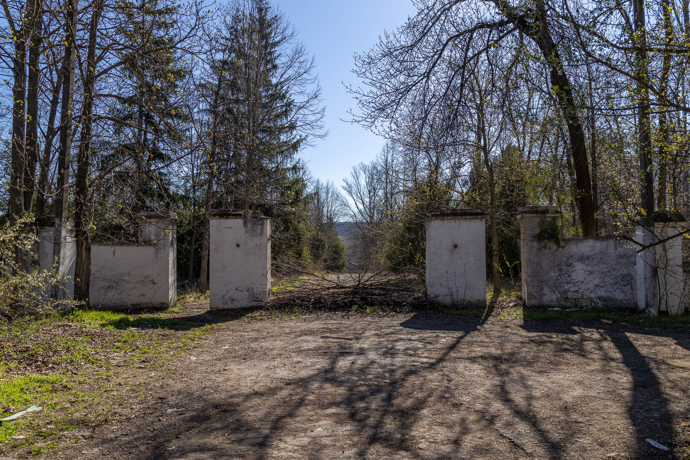
This is the entrance to Pionner Camp Yugi Gagarin. Just 14 years ago it was in much better condition. But back then, it was still guarded, theives hadn't taken any steel, or windows, and it was still avaliable to be booked during the summer time.
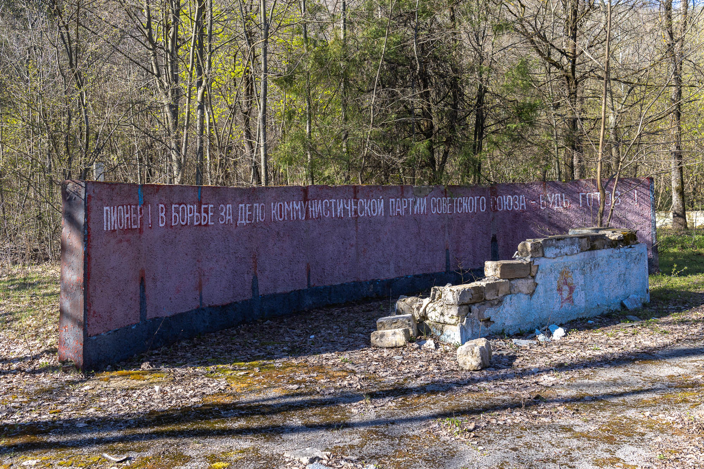
Pioneer!
In the stuggle for the cause of the Communist Party of the Soviet Union, be prepared!
Indoctrination at its Eastern best. It wouldn't be complete without Lenin's face, now peeled and faded, reinforcing the message from the crumbling pedestal below..
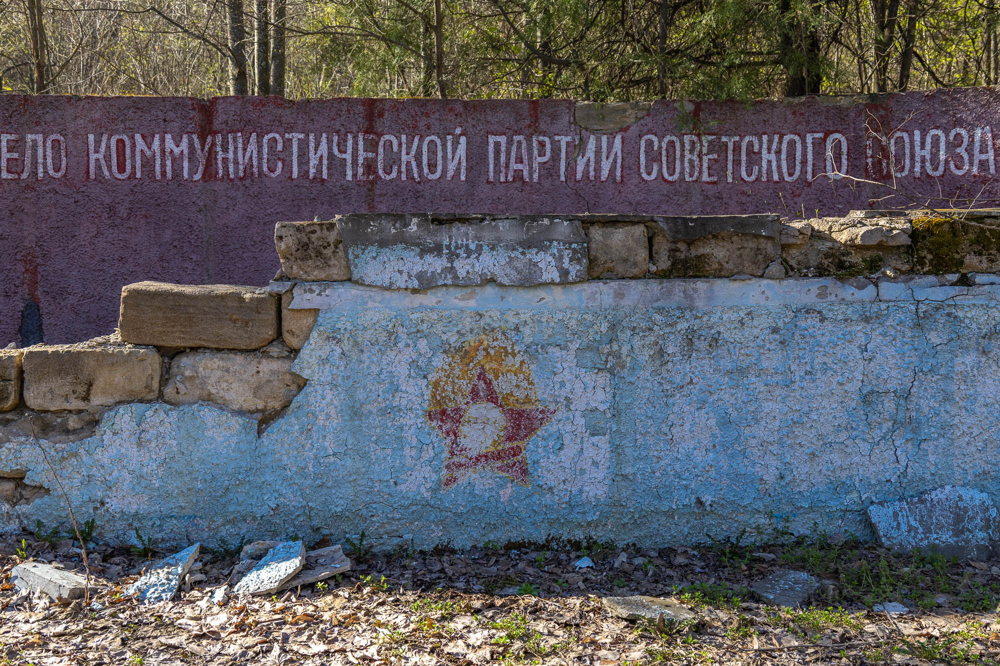
Dormitory #1
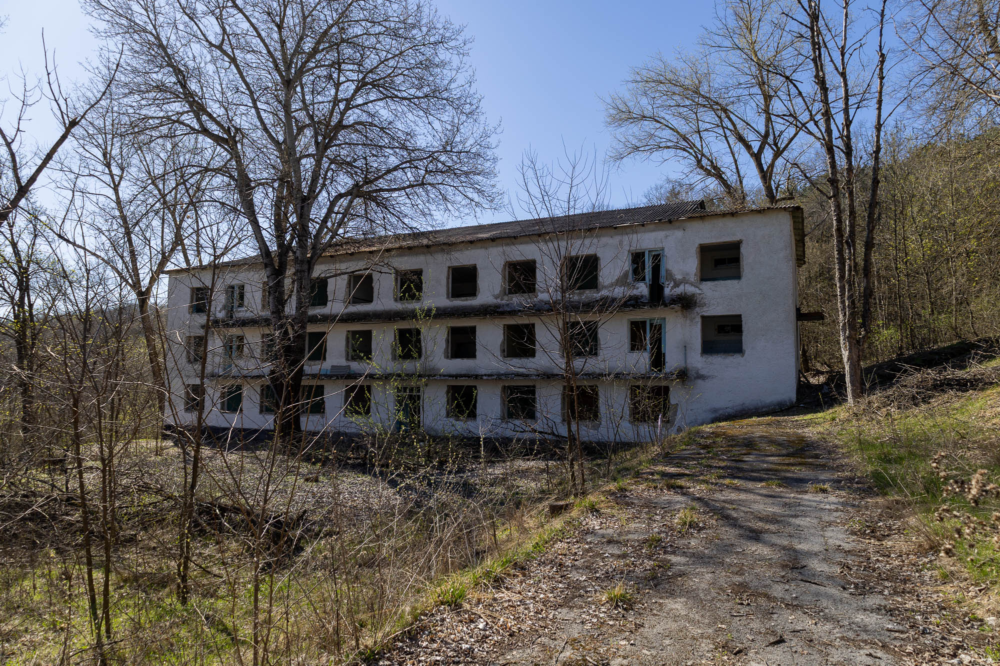
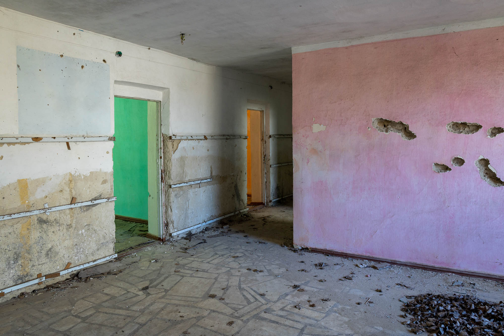
Classroom
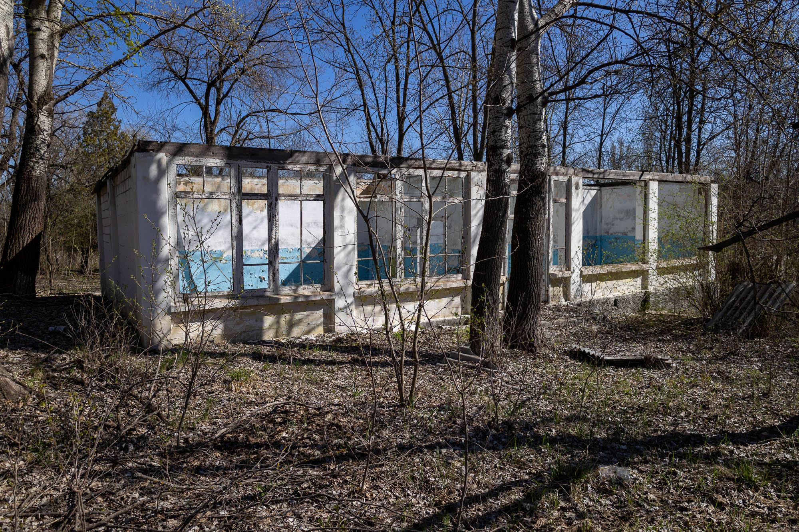
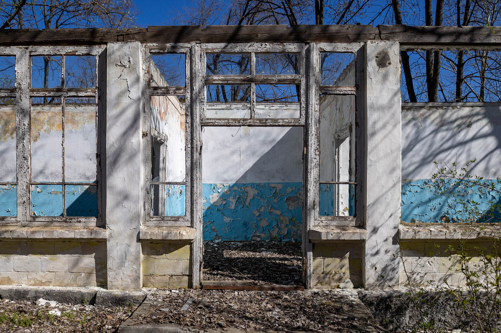
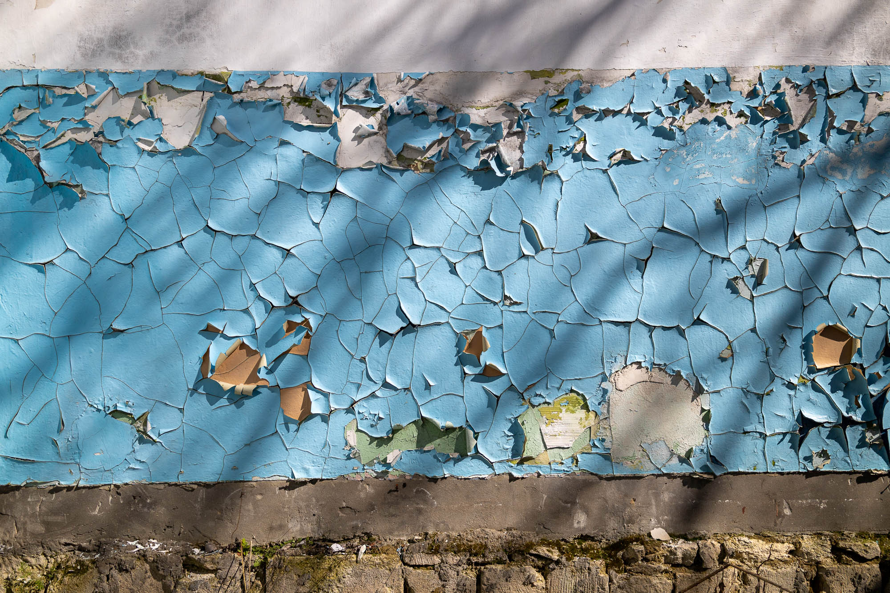
Theater
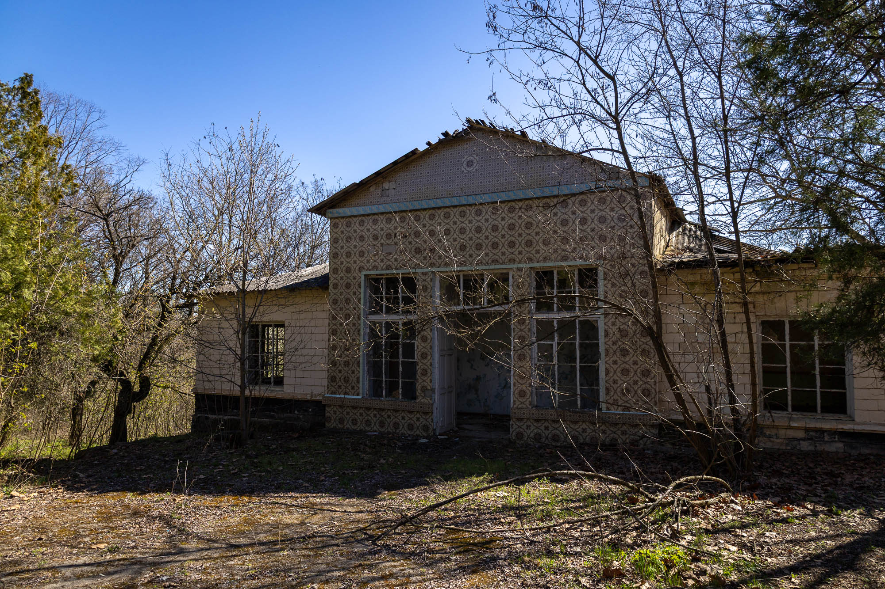
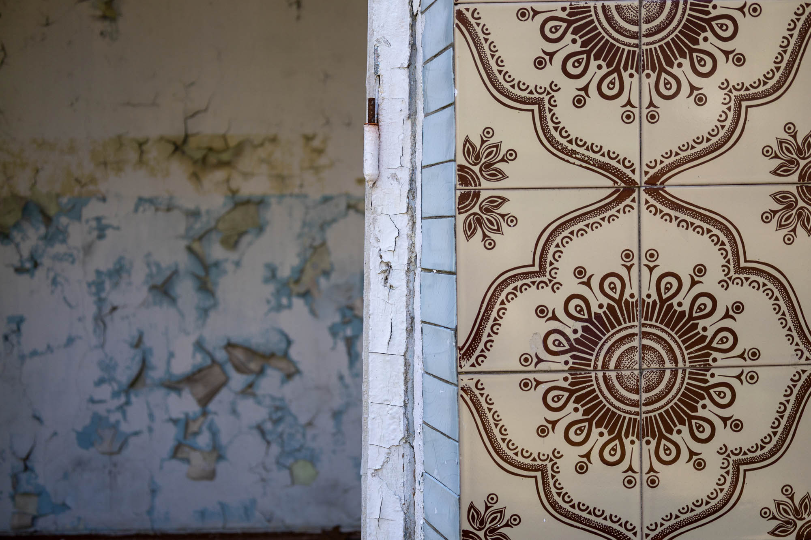
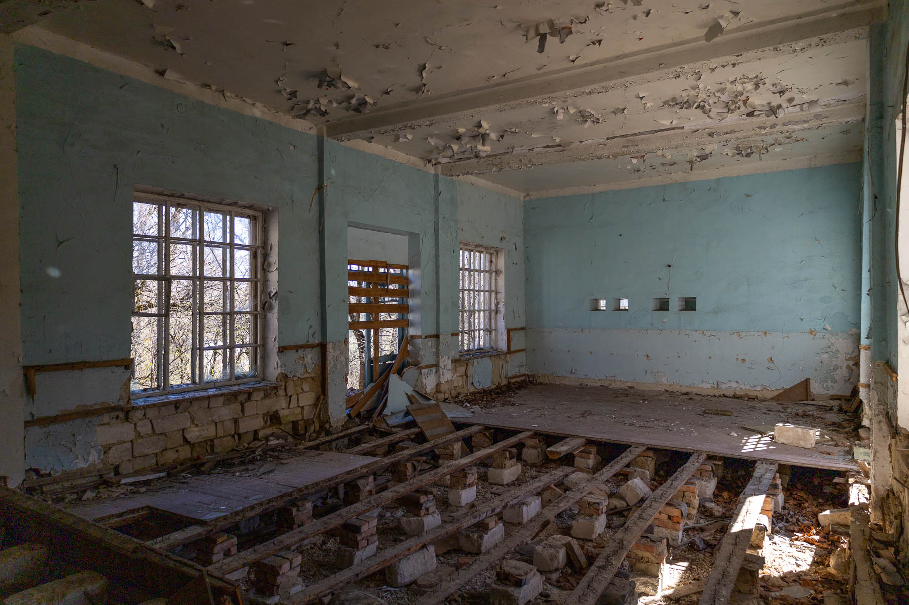
Dormitory #2
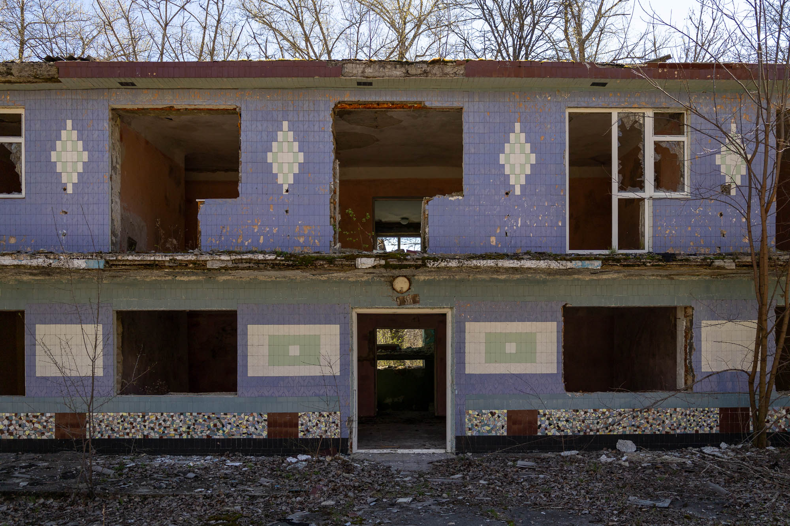
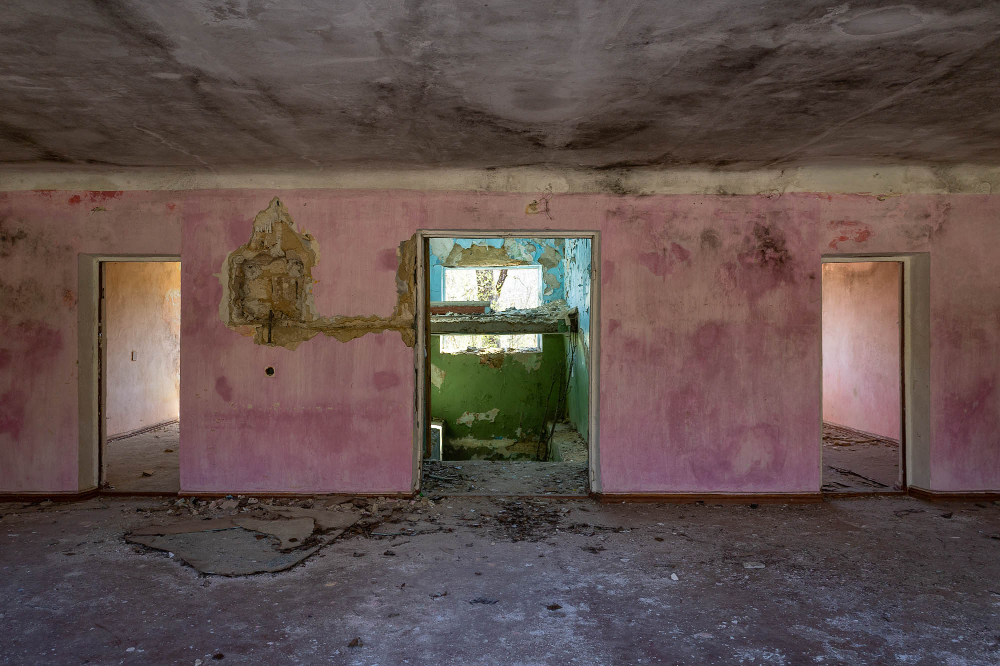
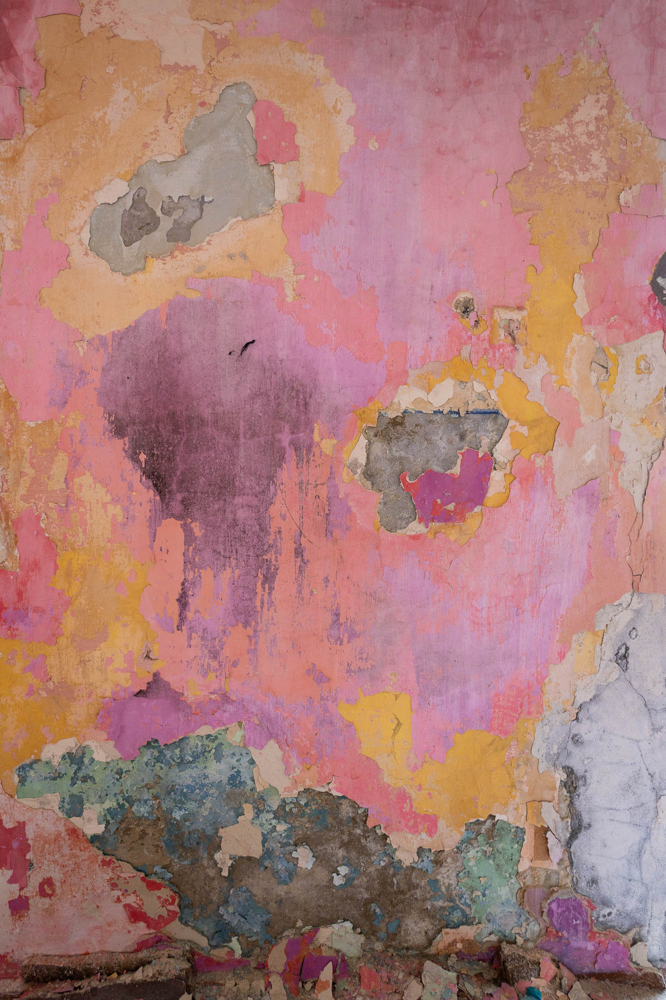
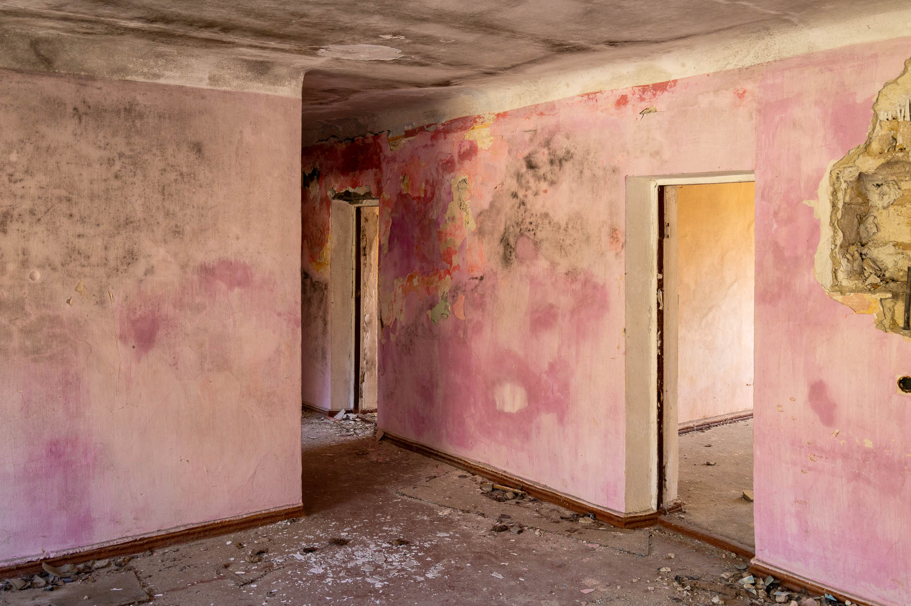